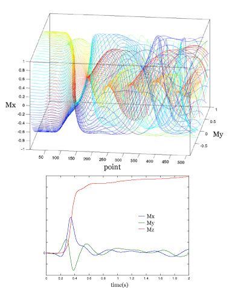

The simulation result from YY Lin's Science paper
|
This simulation represents one of the more interesting features of the DemagField and its interaction with Radiation Damping. As found in the article, 6 OCTOBER 2000 VOL 290 SCIENCE, by Y.Y. Lin, theses two nonlinear interactions cause resurrection and rephasing of completely dephased magnetization (the magnetization after a z-gradient).
The images below are the simulation's output of the same situation, and luckily produce the same results as in the paper. They were plotted using the plottrag matlab function.

|
#parameter file for 1 pulse - 1 Grad Z sequences
#grid units in cm
dim 1,1, 100
gmin -0.02,-0.02, -0.004693
gmax 0.02, 0.02, 0.004693
#cylinder shape min and max
smin 0,0, -0.004693
smax .003, 6.28, .004693
#fid pieces
npts 512
tf 2
#the pulse bits
pulseangle1 90
pulseamp 80000
# ------ THe input file....
#basic spin parametesr
Bo 14.1
temperature 300
offset 0
T2 0
T1 0
spintype 1H
eps 1e-3
demagOff 0
#95% water (2 protons a pieces)
moles 0.1045
#the extra interactions parts
raddamp 0.01
## #gradient things
#choose 'real gradient'(n) or ideal initial condition(y)
#if ideal magnetization will be spread evenly
#around a circle in the xy plane
ideal y
#non-ideal bits (grad units in Gauss/cm)
grad 0,0,1
gradtime1 0.005
fidout data
magout mag
trajectories traj
#------------end input file----------------
#include "blochlib.h"
/*
this is an attempt to imitate the result from YY Lin in
6 OCTOBER 2000 VOL 290 SCIENCE
*/
/*
RF ---90x----FID
Grad -----Gzt------
*/
//need these two namespaces....
using namespace BlochLib;
using namespace std;
timer stopwatch;
void printTime(int nrounds=1){
std::cout <<std::endl<< "Time taken: " << (stopwatch()/nrounds) << " seconds"<<endl;
}
void Info(std::string mess)
{
std::cout<<mess<<endl;
std::cout.flush();
}
//some typedefs to make typing easier
typedef XYZcylinder TheShape;
typedef XYZshape<TheShape> TheGridS;
typedef GradientGrid<TheGridS > TheGrid;
typedef ListBlochParams< TheGrid, BPoptions::Particle|BPoptions::HighField, double > MyPars;
//Extra ineractions
typedef Interactions<Offset<MyPars>, Relax<>, RadDamp, ModulatedDemagField > MyInteractions;
//typedefs for Bloch parameter sets
typedef Bloch< MyPars, Pulse, MyInteractions> PulseBloch;
typedef Bloch< MyPars, NoPulse, MyInteractions> NoPulseBloch;
int main(int argc,char* argv[]){
std::string fn;
query_parameter(argc,argv,1, "Enter file to parse: ", fn);
Parameters pset(fn);
double pang1=pset.getParamD("pulseangle1");
double amp=pset.getParamD("pulseamp");
int nsteps=pset.getParamI("npts");
double tf=pset.getParamD("tf");
std::string fout=pset.getParamS("fidout");
std::string magout=pset.getParamS("magout");
//int contfid=pset.getParamI("allfid","",false);
int cv=pset.getParamI("lyps", "", false);
std::string lypfile=pset.getParamS("lypout", "", false, "lyps");
std::string dataou=pset.getParamS("trajectories", "", false);
//gradient pars
double gradtime1=pset.getParamD("gradtime1"); //first grad pulse time
/******************/
//Grids
coord<int> dims(pset.getParamCoordI("dim"));
coord<> mins(pset.getParamCoordD("gmin"));
coord<> maxs(pset.getParamCoordD("gmax"));
coord<> smins(pset.getParamCoordD("smin"));
coord<> smaxs(pset.getParamCoordD("smax"));
Info("Creating grid....");
Grid<UniformGrid> gg(mins, maxs, dims);
Info("Creating inital shape....");
TheShape tester(smins, smaxs);
Info("Creating total shape-grid....");
TheGridS grids( gg, tester);
std::ofstream goo("grid");
goo<<grids<<std::endl;
//create the gradient grids..
char ideal=pset.getParamC("ideal");
coord<> grad=pset.getParamCoordD("grad");
Info("Creating Gradient map grids....");
TheGrid jj(grids);
jj.G(grad);
/******************/
/******************/
//set up Parameter lists
int nsp=jj.size();
Info("Creating entire spin parameter list for "+itost(nsp)+" spins....");
MyPars mypars(jj.size(), "1H", jj);
nsp=mypars.size();
double inBo=pset.getParamD("Bo");
double inTemp=pset.getParamD("temperature");
std::string spintype=pset.getParamS("spintype");
double moles=pset.getParamD("moles");
std::string detsp=spintype;
Info("setting spin parameter offsets....");
for(int j=0;j<nsp;j++){
mypars(j)=spintype;
mypars(j).Bo(inBo);
mypars(j).temperature(inTemp);
}
mypars.calcTotalMo();
mypars.print(std::cout);
/****************/
//The pulse list for a real pulse on protons..
Info("Creating real pulse lists...
");
Pulse PP1(spintype, amp, 0.); // (spin, amplitude, phase, offset)
PP1.print(std::cout);
double tpulse=PP1.timeForAngle(pang1*Pi/180., spintype);
/********************************/
//time train
double tct=0;
Info("Initializing Time train for first Pulse....");
TimeTrain<UniformTimeEngine > P1(0., tpulse, 10,100);
tct+=tpulse;
Info("Initializing Time train for First Gradient Pulse....");
TimeTrain<UniformTimeEngine > G1(tct, tct+gradtime1, 50,100);
tct+=gradtime1;
Info("Initializing Time train for FID....");
TimeTrain<UniformTimeEngine > F1(tct, tf+tct, nsteps,5);
if(ideal=='y'){ F1.setBeginTime(0); F1.setEndTime(tf); }
/*******************************/
/******************************/
//interactions
double t2s=pset.getParamD("T2");
double t1s=pset.getParamD("T1");
double offset=pset.getParamD("offset")*PI2;
//demag field 'time constant'
//because we are in the 'particle' rep
// we need to calculate the real Mo separately
double mo=mypars[0].gamma()*hbar*
tanh(hbar*PI*(inBo*mypars[0].gamma()/PI2)/kb/inTemp)
*No*moles*1e6/2.0;
double demag=1.0/(mo*permVac*mypars[0].gamma());
double tr=pset.getParamD("raddamp");
Info("setting Interactions....");
Offset<MyPars> myOffs(mypars, offset);
Relax<> myRels(mypars, (!t2s)?0.0:1.0/t2s, (!t1s)?0.0:1.0/t1s);
RadDamp RdRun(tr);
ModulatedDemagField DipDip(demag, jj.G());
std::cout<<"Total Mangetization: "<<mo<<std::endl;
std::cout<<DipDip<<" Td: "<<DipDip.td()<<" axis: "<<DipDip.direction()<<std::endl;
MyInteractions MyInts(myOffs, myRels, RdRun, DipDip);
demag=pset.getParamD("demagOff", "", false, 0.0);
if(demag!=0) DipDip.off();
/********************************/
//THis is the BLoch solve to perform a pulse
Info("Initializing total parameter list with a pulse....");
PulseBloch myparspulse(mypars, PP1, MyInts);
//This is the Bloch solver to Collect the FID (i.e. has no pusles...FASTER)
Info("Initializing total parameter list for FID collection....");
NoPulseBloch me;
me=myparspulse;
Vector<coord<> > tm=me.currentMag();
std::cout<<"TOTAL mag initial condition: "<<sum(tm)<<std::endl;
//the 'error' in the helix
double emp=pset.getParamD("eps", "", false, 1e-3);
//set the circular initialcondition..a single helix
if(ideal=='y'){
MyPars::iterator myit(mypars);
double lmax=smaxs.z()-smins.z();
coord<> tp;
while(myit){
tp=myit.Point();
tm[myit.curpos()].x()=sin(tp.z()/lmax*PI2)+emp;
tm[myit.curpos()].y()=cos(tp.z()/lmax*PI2);
tm[myit.curpos()].z()=0.0;
++myit;
}
}
stopwatch.reset();
BlochSolver<PulseBloch > drivP(myparspulse, tm);
BlochSolver<NoPulseBloch > drivD(me, tm);
//integrate pulse and gradient pulse
//only if NOT ideal experiment
if(ideal=='n'){
//output trajectory data if wanted
if(dataou!=""){
drivP.setWritePolicy(Continous);
drivP.setRawOut(dataou, std::ios::out);
}else{
drivP.setWritePolicy(Hold);
}
drivP.setCollectionPolicy(FinalPoint);
//integrate the first pulse
myOffs.off(); //turn off gradient
Info("Integrating first Pulse ....");
if(!drivP.solve(P1)){
Info(" ERROR!!..could not integrate pulse P1....");
return -1;
}
//integrate the gradient pulse
Info("Integrating the Gradient Pulse....");
drivD.setInitialCondition(drivP.lastPoint());
//output trajectory data if wanted
if(dataou!=""){
drivD.setWritePolicy(Continous);
drivD.setRawOut(dataou, std::ios::app|std::ios::out);
}else{
drivD.setWritePolicy(Hold);
}
if(gradtime1>0){
myOffs.on(); //turn on gradient
if(!drivD.solve(G1)){
Info(" ERROR!!..could not integrate G1....");
return -1;
}
}
}
//integrate FID
if(cv){
me.calcVariational();
drivD.setVariationalInitCond(me.curVariational());
drivD.setLyapunovPolicy(LypContinous);
drivD.setLypDataFile(lypfile);
}
myOffs.off();
Info("
Integrating for FID ....
");
//output trajectory data if wanted
drivD.setCollectionPolicy(MagAndFID);
if(dataou!=""){
drivD.setWritePolicy(Continous);
if(ideal=='y') drivD.setRawOut(dataou, std::ios::out);
else drivD.setRawOut(dataou, std::ios::app|std::ios::out);
}else{
drivD.setWritePolicy(Hold);
}
//solve the FID and write it to a file
if(drivD.solve(F1)){
drivD.writeSpectrum(fout);
drivD.writeMag(magout);
}
printTime();
}
|
|